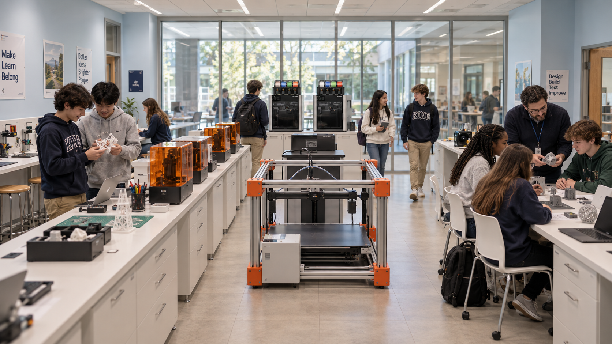
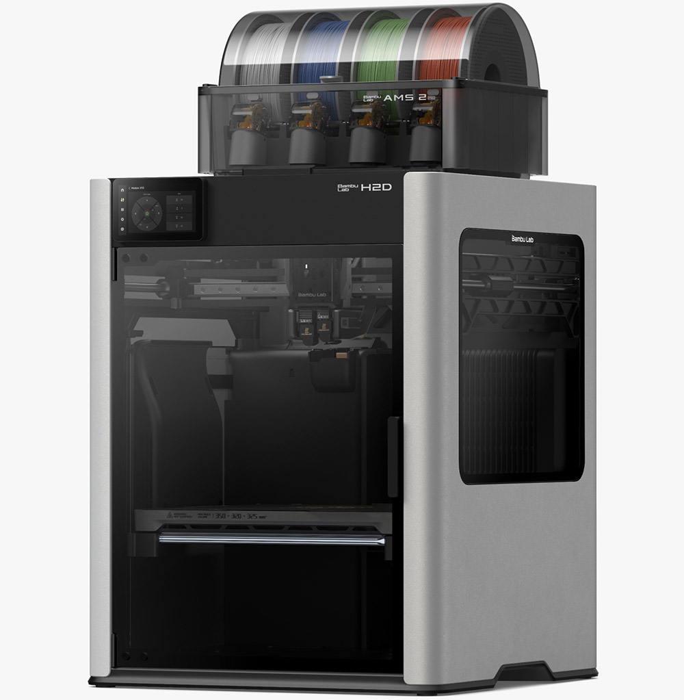
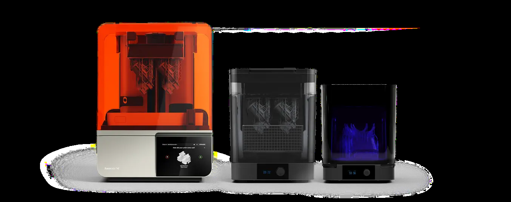
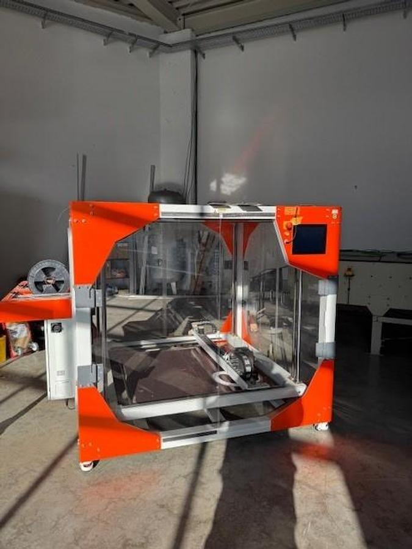
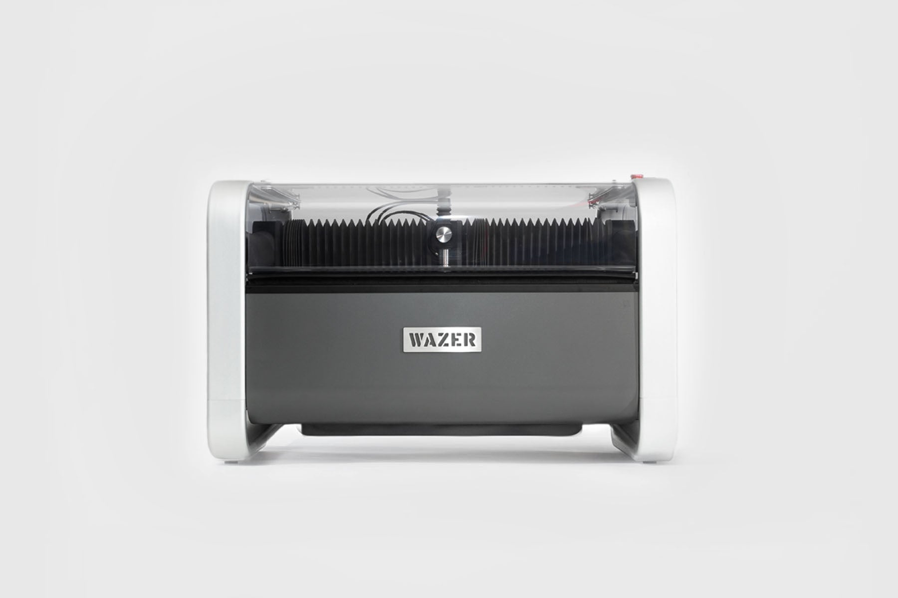
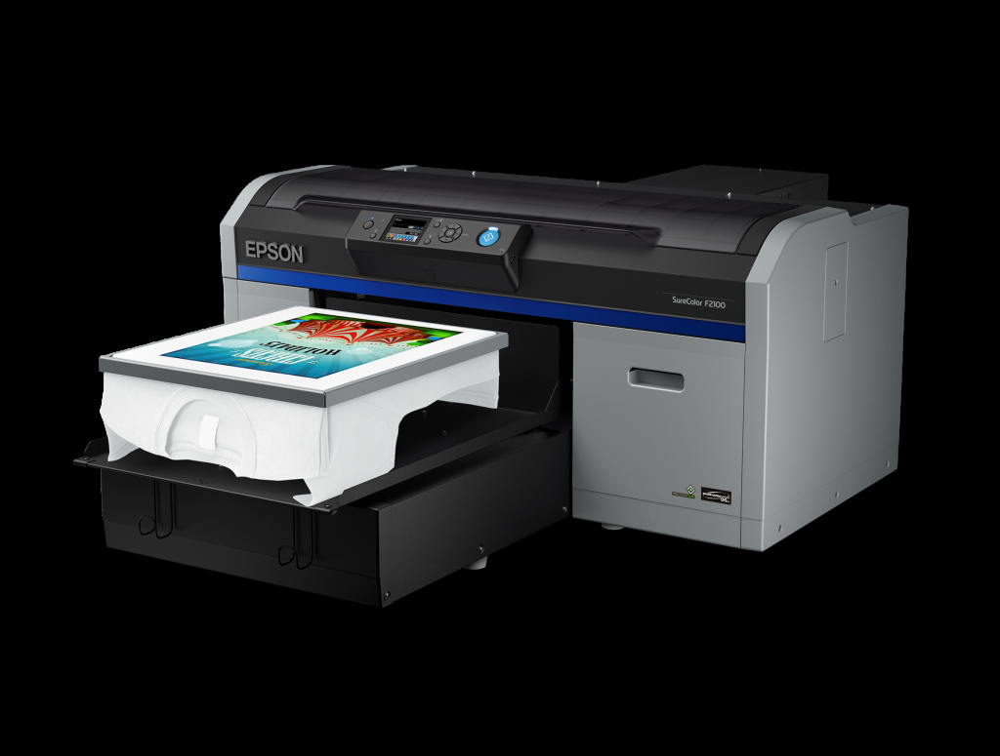
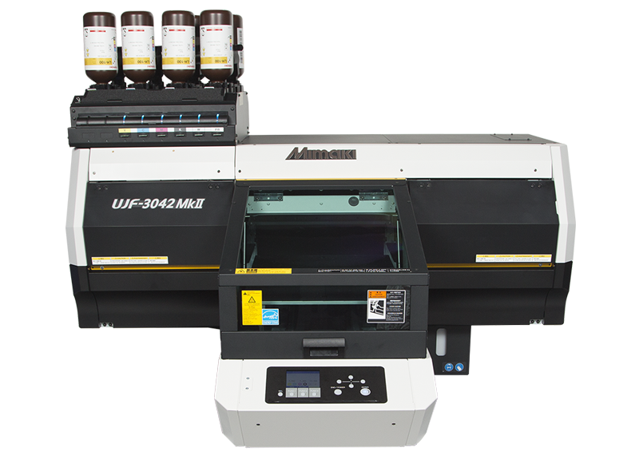
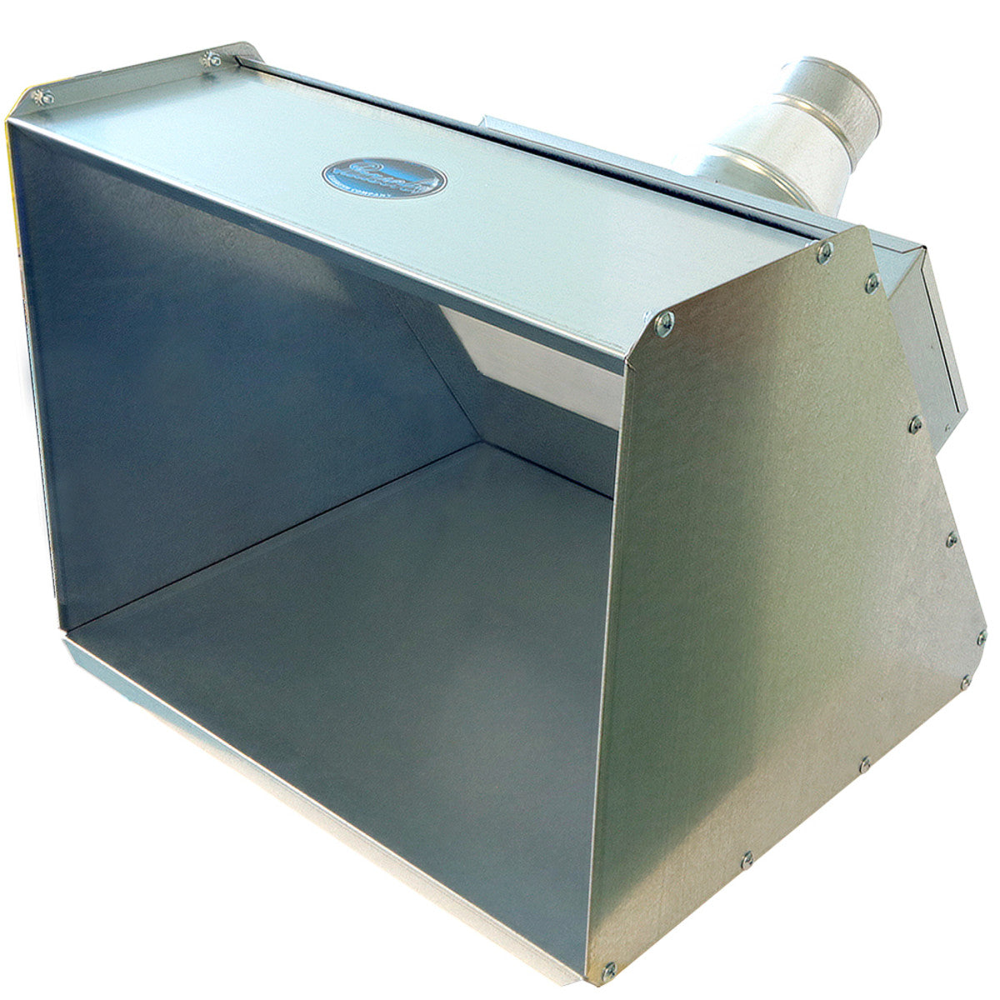

Picture 1: Exact overhead layout and room mask

Geometry, framing, scale, positions and black boundary authority.
Download reference 1Revision 11: first-frame image-to-video. Only the overhead opening image is included. Appearance references are removed; details are in the prompt. Select minimax_h3_fl2va_pruned_int8_convrot.safetensors in the diffusion-model loader. CGlide FL2VA mode has only FIRST filled. Reimport the new package with Project > Open.
Upload in numbered order. Picture 1 controls layout; all other images supply only their stated attributes. Fixed top-down, 12 seconds, students walking. Open prompt · Upload instructions · All rooms
Download CGlide project package / All CGlide projects
Geometry, framing, scale, positions and black boundary authority.
Download reference 1
Transfer photographic materials, fully clothed student appearance and fine surface detail only. This eye-level image is NOT a camera, layout, furniture-count or location reference; do not transfer depth of field.
Download reference 2
The enclosure, dark glazing, toolhead and four-spool AMS 2 Pro appearance only. Exactly TWO installed printer assemblies at the positions in Picture 1. Never substitute Prusa or add printers. Appearance only; Picture 1 controls scale and placement.
Download reference 3
Orange translucent resin-printer hood and compact wash/cure equipment appearance only; do not infer an exact product generation or new placement. Appearance only; Picture 1 controls scale and placement.
Download reference 4
Large square open-frame printer with orange and silver members. Preserve the existing footprint and orientation. Appearance only; Picture 1 controls scale and placement.
Download reference 5
White curved side housings, dark front and clear lid, at its existing modeled position. Appearance only; Picture 1 controls scale and placement.
Download reference 6
Dark garment-printer housing, blue detail band and flat garment platen. Keep the modeled footprint. Appearance only; Picture 1 controls scale and placement.
Download reference 7
Silver and black compact UV flatbed printer with external ink bottles; appearance family guide only, not proof of installed model. Appearance only; Picture 1 controls scale and placement.
Download reference 8
Metal benchtop booth, angled side walls and round exhaust duct. Keep it in the modeled corner facing into the room and venting toward the patio; do not relocate it. Appearance only; Picture 1 controls scale and placement.
Download reference 9